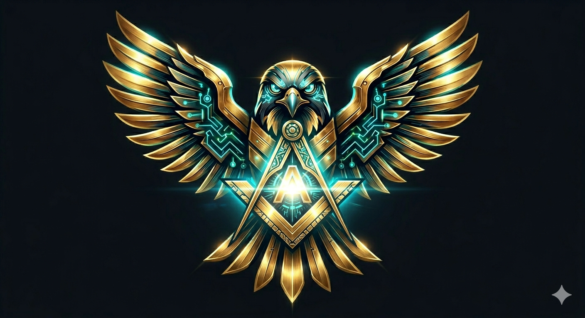

"BLACKHAWK DOWN 11 - THE GUARDIAN SPIRIT"
Arnaid v17 menggunakan sistem Reconquista Protocol—sebuah algoritma deteksi arah aliran dana (Money Flow) yang memastikan Anda tidak pernah berada di sisi yang salah. Melalui Dual-Sensor Intelligence, EA ini hanya akan melakukan eksekusi jika seluruh elemen market berada dalam fase Sejajar Sempurna.
"Rules Of God" Active: Mode tempur aktif hanya jika sensor INFRARED dan NIGHTVISION mendeteksi struktur harga yang solid dan stabil.
| Infrared Lens | Main Trend Analyzer |
| NightVision Lens | Precision Precision Eye |
| Stability Sync | Formation Lock Active |
| Scan Interval | Real-time Tick Data |
| Noise Filter | Custom Spread Guard |
| Tactical Profit | 5,000 Points |
| Mission Target | 6,500 Points Daily |
| Damage Limit | Hard DD Stop |
Arnaid v17 memiliki protokol keselamatan instan. Jika sensor utama mendeteksi perubahan struktur market secara mendadak, sistem akan melakukan Auto-Eject (tutup posisi) dan menyiapkan Re-Entry Counter jika arah baru telah tervalidasi.
Algoritma cerdas yang melakukan pemindaian kekuatan market secara berkala. Menyesuaikan Thrust Power dan Radar Sensitivity secara otomatis agar tetap relevan di segala kondisi volatilitas.
Sistem audit internal yang melacak beban beban kritis pada akun Anda. Memastikan setiap siklus perdagangan berada dalam parameter keamanan yang telah ditentukan.
Sistem pertahanan lapis dua yang mengunci keuntungan Anda secara dinamis agar tidak tergerus oleh koreksi market yang tidak terduga.
Jangan biarkan modal Anda tanpa perlindungan. Arnaid v17 adalah standar baru dalam manajemen risiko trading otomatis.
HUBUNGI MARKAS (TELEGRAM)